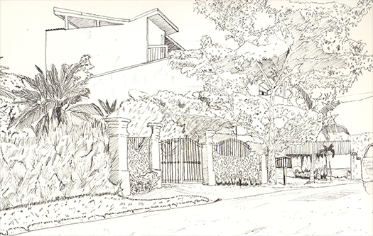
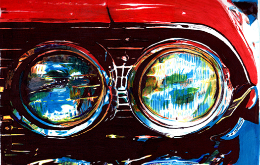

+8658 4888 steve.com@hotmail.com

+8658 4888 steve.com@hotmail.com


Pen-InkPen and ink is a technique in which a pen is used to apply colored inks to paper - from modern ballpoint pens to an ancient pen dipped in an inkwell. Because the ink is applied with a hard edge, the result will look different than when using a soft-tipped pencil. Credit: Steve Montoya |
 |
WatercolorWatercolor is a pictorial technique that is done on paper and uses colors that dissolve in water. Its paint is obtained by agglutination of dry pigments mixed with gum arabic. Consists of applying semi-transparent layers, which will be superimposed to achieve darker colors. Credit: Steve Montoya |
|  |
PensilThe pencil drawing technique is one of the oldest types of artistic work in the history of art. This technique is popular, since the pencil is the most manageable element within the drawing and it comes in various shapes and textures according to the work to be done. Credit: Steve Montoya |